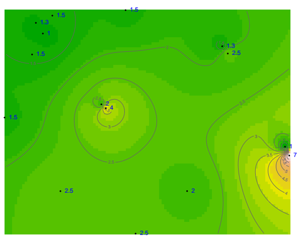
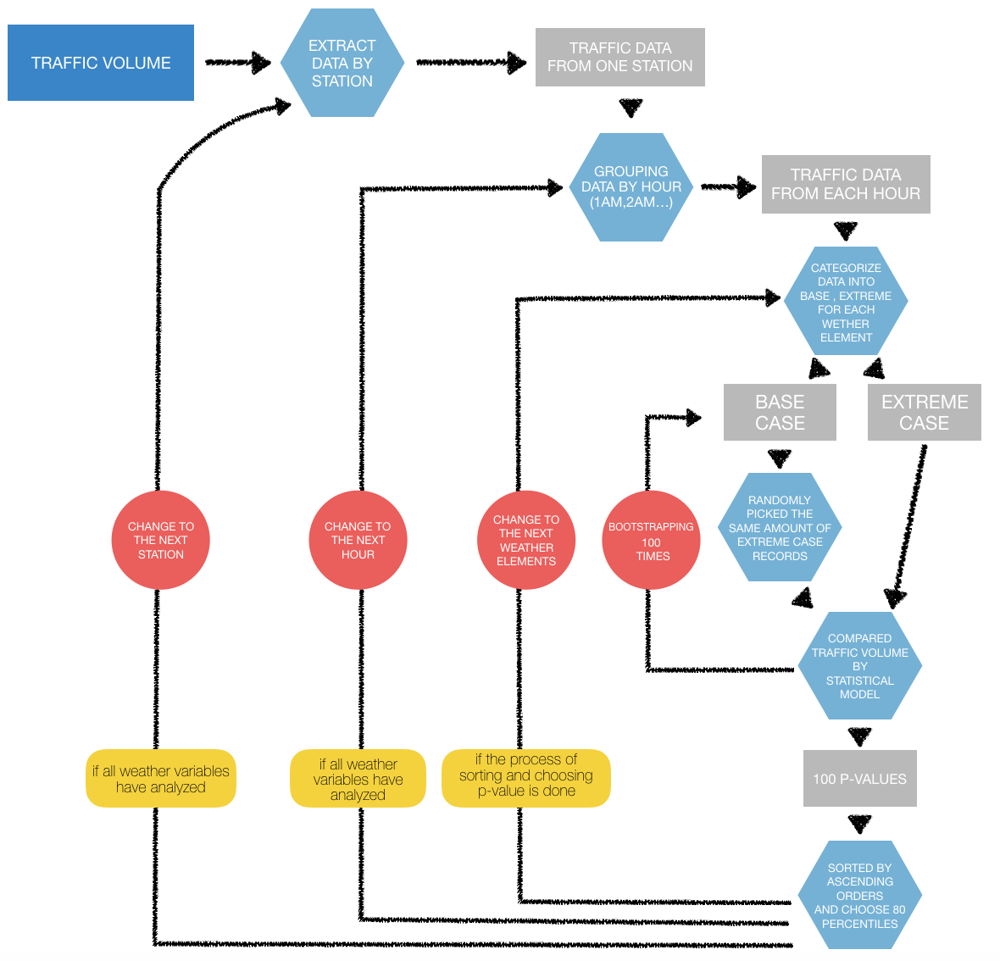
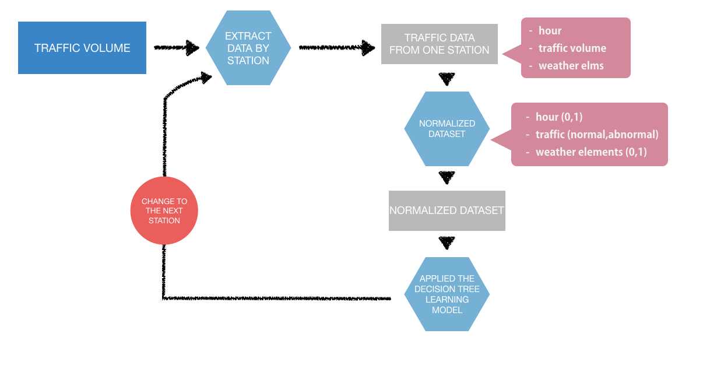

What I did
- Research:
R, Python, Stat, Machine Learning - Development:
D3.js, Mapbox, Django - Database:
PostgreSQL, InfluxDB
Project Goals
Extreme weather events can be a crucial factor that adversely impacts traffic volumes. Obtaining a better understanding of weather factors affecting traffic flow can eventually help both government and other infrastructure agencies. So, this research was conducted to understand the effect of climate events on traffic behavior. The purpose of this research was to analyze and discuss the impact of precipitation, temperature, visibility and wind speed on hourly weekday traffic flow volume in Atlanta, Georgia. This study focused on investigating which weather variables affect traffic volume, developing a machine learning based predictive technique to derive weather-traffic volume decision rules, and building a decision support tool.
This is my Master's in Geography Thesis project. I researched, designed, and built the application under the guidance of Dr. David Sathiraj and Dr. Fahui Wang.
Process
Define Research Question
To have a better understanding of the impact of extreme climate events on traffic volume in Atlanta, this research mainly focused on analyzing and examining the following research questions:
- Does precipitation, temperature, visibility and wind speed as extreme events have a significant impact on hourly traffic volume in Atlanta?
- If so, does the impact have a specific pattern? Is the impact different based on different times of the day and volumes of precipitation, temperature, visibility and wind speed?
- Is it possible to statistically correlate these impacts?
- Is it possible to develop a machine learning model that can account for interdependent weather variables and predict impacts on hourly traffic volume?
For the purpose of answering these research questions, this study analyzed and examined the impact of weather events on hourly traffic volume. These data came from 48 permanent traffic counter sites and was analyzed by applying statistical techniques to study correlation and machine learning models to predict traffic volume impacts under extreme weather events.
Choosing a study area
This research generally focuses on the Atlanta Metropolitan Statistical Area (MSA), which is one of the most important business capitals of the southern U.S. With more than 5,000,000 population, the city is one of the busiest in terms of activities and transportation. According to the Georgia Department of Revenue Motor Vehicle Division Registration, there are almost 3,000,000 personal passenger cars in the area, and more than 500,000 daily ridership. Moreover, Atlanta received an average annual rainfall of 49.71 inches (1263 millimeters) which is 27% more than the average in other similarly sized US cities (NOAA). This is the perfect combination of these two variables, thereby making Atlanta the best candidate for this research.
Data Collection
-
Hourly Weather Data
Weather data used in this analysis were collected from 4 climate stations retrieved from the Integrated Surface Hourly (ISH) weather data archives of the National Centers of Environmental Information (NCEI). This analysis retrieved almost 225,000 records of hourly weather observations spanning the time period, 2011 - 2015. These data were then converted from UTC timezone to Atlanta’s local timezone which is the Eastern Time Zone, while implementing daylight savings time. One major problem was that the data were collected at isolated observation sites, which were used to capture temperature, wind speed, visibility and precipitation data at the traffic observation sites. This research uses spatial interpolation techniques such as Inverse Distance Weighting (IDW), Kriging and radial basis function (RBF) to estimate the weather variables geographically. -
Hourly traffic variables
This research was conducted using hourly traffic data recorded by 48 Automatic Traffic Recorder (ATR) sites for the 5-year period from 2011 - 2015. The ATR stations were permanently installed on the Road Inventory network to count the number of all vehicles passing through each counter location on State Routes, major county roads, and major city streets continuously 7 days a week, 24 hours a day, 365 days a year. This traffic dataset consisted of latitude and longitude of the sites, names of the roads where each camera was located, amount of hourly traffic volume, and datestamp that the camera recorded the traffic volume. This research collected traffic data through a web-based GIS from Transmetric LLC company and stored it in a local PostgreSQL database.
Data Analysis
-
Correlation Analysis
This research applied three statistical test including Wilcoxon, Mann-Whitney, and T-test in R programming by the same procedure as follows: every statistical comparison analysis was used to compare traffic volume in normal weather conditions and extreme weather conditions. Each model separately analyzed traffic volume from each weather variable, station, and hour of day. It is important to realize, for some cases, numbers of base cases outnumbered extreme cases more than five times. To avoid issues from different sample sizes, this research applied a bootstrapping technique by randomly picking equal numbers of extreme case records and base case records and recreated the t-test model 100 times. The p-values were sorted in ascending order. Then, p-values at the 80 percentile was chosen to be a representative of the group. If more than 80% of the results fell under 0.05, it was understood that there was a significant difference between the means of the extreme and base case groups. The total of 1,152 p-values from the comparison between traffic volume from every traffic station (48) and every hour of day (24) were stored in a table.

-
Machine Learning
This research used a decision learning tree method to investigate the impact of extreme weather events on traffic volume because it allowed all of the independent variables to be considered at the same time and did not assume an underlying distribution. Decision tree learning was one of the most widely used predictive machine learning techniques. This method was a non-parametric supervised statistical method for classification and regression. The purpose of this model was to predict values of a target variable by producing tree structures.
Design & Develop Information Visualization
The visualization platform was developed to visually encode the results of this traffic behavior analysis to help users easily perceive the information. I started by derive data format of each information that I wanted to present.
This application was the end product from the research. I did not have a chance to talk and conduct a user research to expand its potential. This app was built just to show the results the research without considering possible potentials that it could help users such as urban planner, commuters, and others who might get benefits from this information. We might be able to develop a better decision support tool and visualization that can support multiple uses and provide better information to groups of users.